Ознакомление с инструментами поиска файлов и фильтрации текстовых
данных.
Приобретение практических навыков управления процессами (и
заданиями),
проверки использования дискового пространства и обслуживания файловых
систем.
Выполнить действия по: - перенаправлению ввода и вывода - поиску файлов - фильтрации текстовых данных - управлению процессами - проверке использования дискового пространства
На первом этапе была выполнена авторизация в операционной системе с использованием имени пользователя.
/etc в file.txtСначала был получен список файлов из каталога /etc и
записан в файл file.txt.
После этого список файлов из домашнего каталога был добавлен в тот же файл.
.confИз файла file.txt были выбраны имена файлов с
расширением .conf.

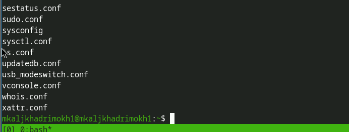
c (метод 1)
c (метод 2)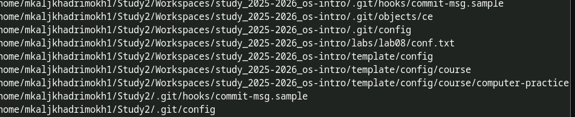
c (метод 3)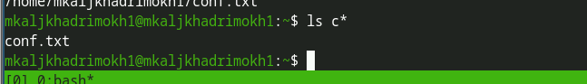
/etc
начинающиеся с h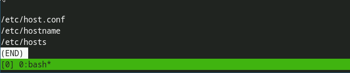
h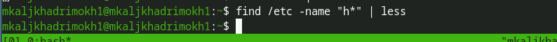
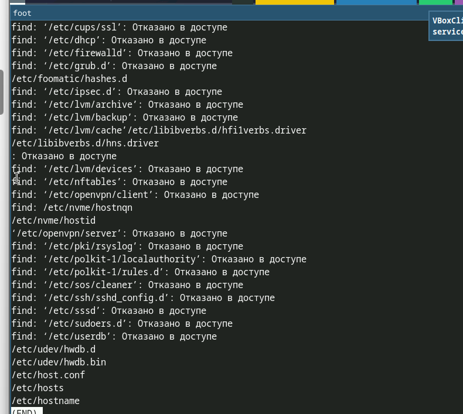
Процесс записывает файлы начинающиеся с log в
~/logfile.
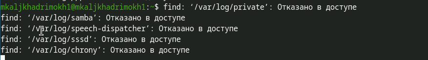
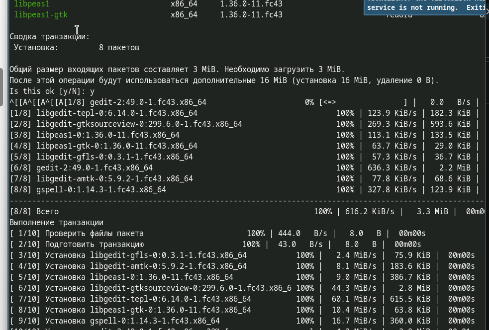
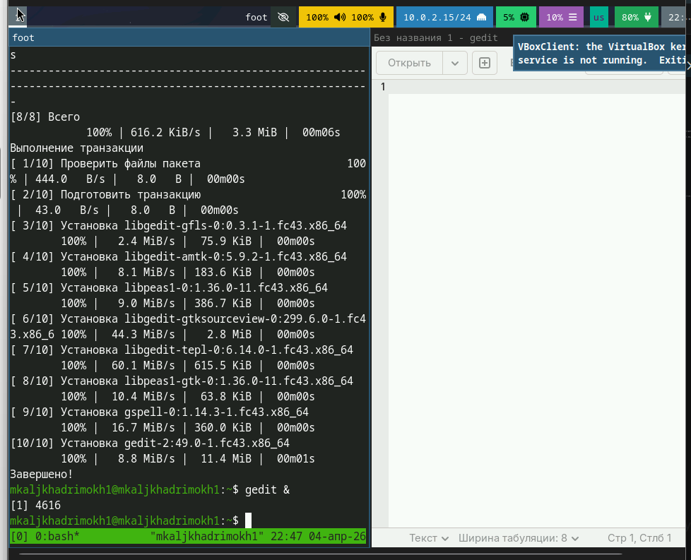
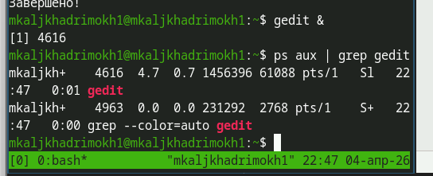
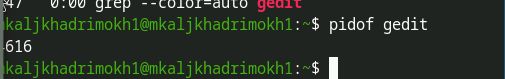
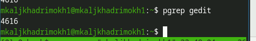
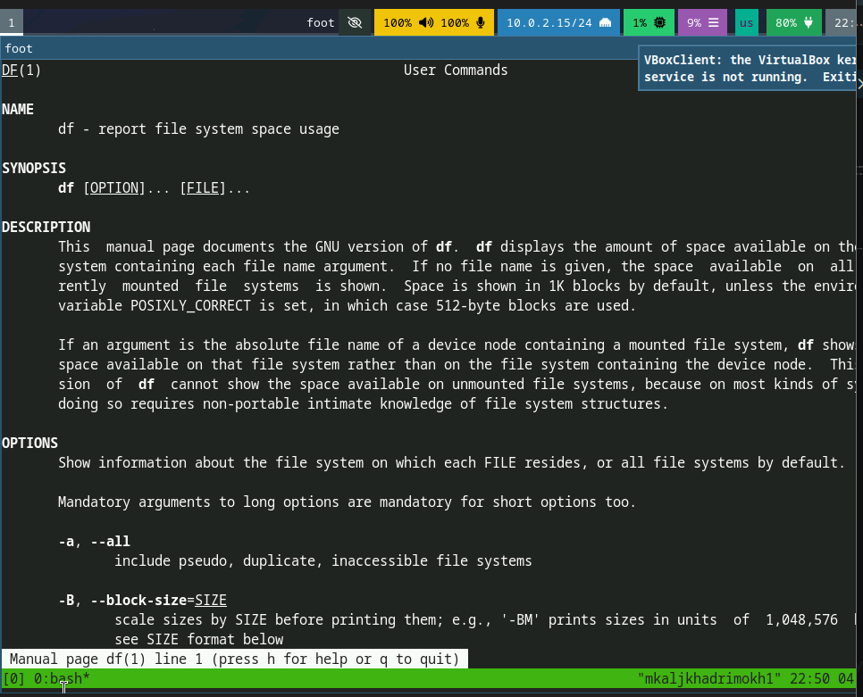
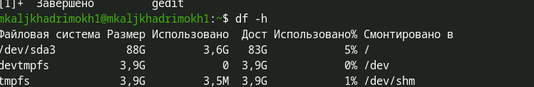
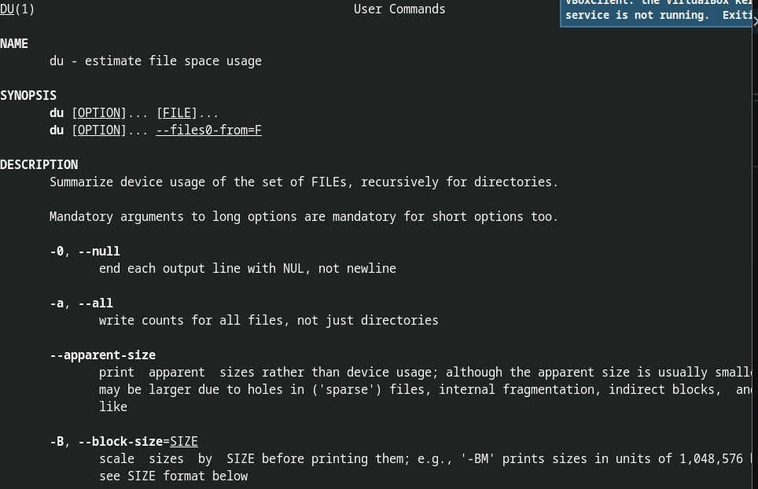
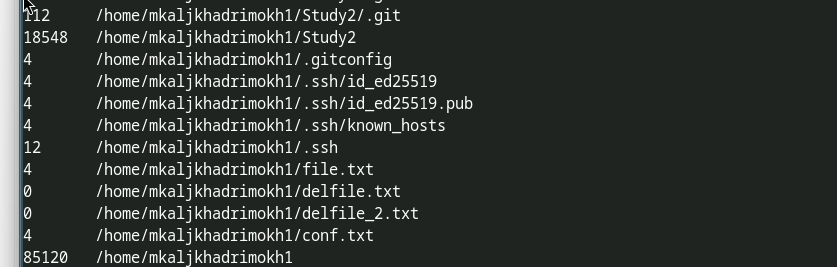
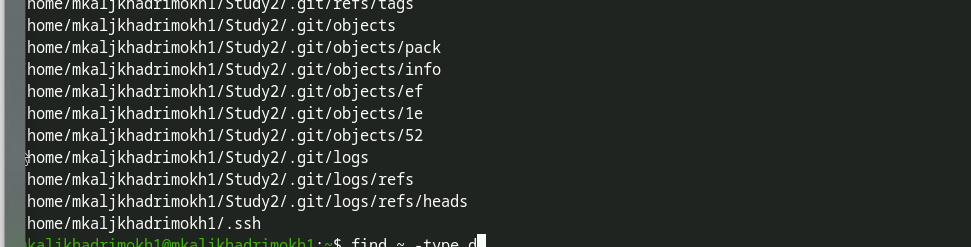
В ходе выполнения лабораторной работы были изучены инструменты поиска
файлов и фильтрации текстовых данных.
Получены практические навыки управления процессами, проверки
использования дискового пространства и работы с файловой системой.